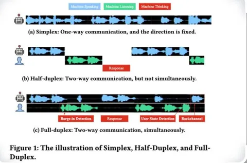

Публикуем последнюю часть классификации и выводы из большого обзора современных разговорных ИИ.
В предыдущих сериях: 1, 2, 3.
Классификация по подходу к обеспечению диалоговости: стриминг, симплекс, дюплекс, полудюплекс. Стриминговая модель может обрабатывать запросы пользователя прямо в процессе их появления, не дожидаясь конца монолога. Например, Qwen, нестриминговая модель — она ждёт, пока вы договорите, и обрабатывает всё аудио, прежде чем ответить. В настоящем же диалоге всё по-другому: собеседник слушает и осмысляет вашу реплику непрерывно, и может начать отвечать после неё с минимальной задержкой. Нестриминговые модели могут работать в симплекс-подходе, когда диалог больше похож на обмен голосовыми сообщениями.
Полудюплекс включает в себя автоматическое определение конца речи, после которого она обрабатывается и ответ возвращается в виде аудио — как это реализовано в Alexa, Алисе и других умных помощниках.
В полноценной дюплекс-реализации модель каждый чанк времени обрабатывает входящие реплики и генерирует выходные. Когда она слушает, она генерирует тишину или поддакивает, показывая что на связи. А если её перебить, сможет естественно остановиться, договорив слово до конца. Так получаются наиболее живые диалоги, но попытку сделать полноценный дюплекс на момент написания статьи сделали только в Moshi.
Ещë в статье была часть про бенчи, которая скорее расстроила: эффективно измерять качество именно диалоговых систем пока толком не на чем. Есть замеры, которые сравнивают отдельные аспекты «умности» диалоговых систем/ALM. При этом у выигрывающих по бенчам статей далеко не всегда самые впечатляющие демо.
Если пытаться идти вглубь и смотреть, как сравниваются исходные статьи, то можно найти противоречия даже в базовых замерах. Например, в задержках.
Авторы проделали большую работу: собрали и систематизировали значимые статьи. Но аспекты, по которым они проводили систематизацию, коррелируют между собой, поэтому обзор повторяется, переходя от одного к другому. Например, парадигма тренировки на 90% определяется выбором представления звука.
Для себя я вынес следующее:
1. SpiritLLM, Moshi, SyncLM — интересные реализации диалоговых систем.
2. Победят акустические токены + длительная стадия пост-претрейна на большом объёме аудио + файнтюн на диалогах (даже синтезированных). Но это не точно.
3. Нормальных бенчей нет.
4. Дюплекс — правильный путь, но работает пока только у Moshi, и то плохо. Спойлер, выходящий за пределы этого обзора: кажется, у Sesame.com получилось.
5. Статей становится всё больше, так что будущее — за e2e-диалоговыми системами.
Итоговый вывод: скам статья или не скам? На мой взгляд, статья — не скам. Например, с неё будет полезно начать, чтобы понять, что вообще происходит в отрасли.
Никита Рыжиков
